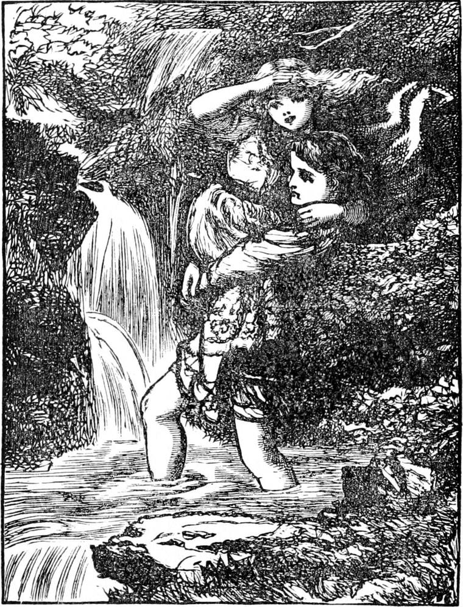
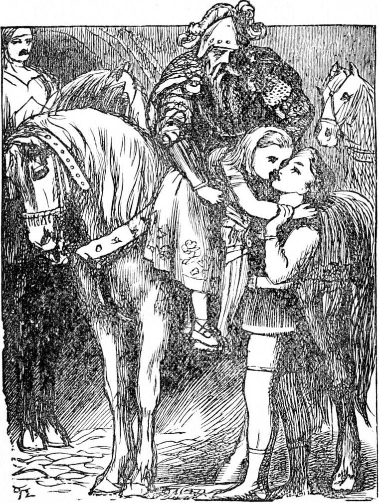

The next morning the sun rose so bright that Irene said the rain had washed his face and let the light out clean. The torrents were still roaring down the side of the mountain, but they were so much smaller as not to be dangerous in the daylight. After an early breakfast, Peter went to his work and Curdie and his mother set out to take the princess home. They had difficulty in getting her dry across the streams, and Curdie had again and again to carry her, but at last they got safe on the broader part of the road, and walked gently down towards the king's house. And what should they see as they turned the last corner but the last of the king's troop riding through the gate!
'Oh, Curdie!' cried Irene, clapping her hands right joyfully, 'my king-papa is come.'
The moment Curdie heard that, he caught her up in his arms, and set off at full speed, crying:
'Come on, mother dear! The king may break his heart before he knows that she is safe.'

Irene clung round his neck and he ran with her like a deer. When he entered the gate into the court, there sat the king on his horse, with all the people of the house about him, weeping and hanging their heads. The king was not weeping, but his face was white as a dead man's, and he looked as if the life had gone out of him. The men-at-arms he had brought with him sat with horror-stricken faces, but eyes flashing with rage, waiting only for the word of the king to do something—they did not know what, and nobody knew what.
The day before, the men-at-arms belonging to the house, as soon as they were satisfied the princess had been carried away, rushed after the goblins into the hole, but found that they had already so skilfully blockaded the narrowest part, not many feet below the cellar, that without miners and their tools they could do nothing. Not one of them knew where the mouth of the mine lay, and some of those who had set out to find it had been overtaken by the storm and had not even yet returned. Poor Sir Walter was especially filled with shame, and almost hoped the king would order his head to be cut off, for to think of that sweet little face down amongst the goblins was unendurable.
When Curdie ran in at the gate with the princess in his arms, they were all so absorbed in their own misery and awed by the king's presence and grief, that no one observed his arrival. He went straight up to the king, where he sat on his horse.
'Papa! papa!' the princess cried, stretching out her arms to him; 'here I am!'
The king started. The colour rushed to his face. He gave an inarticulate cry. Curdie held up the princess, and the king bent down and took her from his arms. As he clasped her to his bosom, the big tears went dropping down his cheeks and his beard. And such a shout arose from all the bystanders that the startled horses pranced and capered, and the armour rang and clattered, and the rocks of the mountain echoed back the noises. The princess greeted them all as she nestled in her father's bosom, and the king did not set her down until she had told them all the story. But she had more to tell about Curdie than about herself, and what she did tell about herself none of them could understand—except the king and Curdie, who stood by the king's knee stroking the neck of the great white horse. And still as she told what Curdie had done, Sir Walter and others added to what she told, even Lootie joining in the praises of his courage and energy.
Curdie held his peace, looking quietly up in the king's face. And his mother stood on the outskirts of the crowd listening with delight, for her son's deeds were pleasant in her ears, until the princess caught sight of her.
'And there is his mother, king-papa!' she said. 'See—there. She is such a nice mother, and has been so kind to me!'
They all parted asunder as the king made a sign to her to come forward. She obeyed, and he gave her his hand, but could not speak.
'And now, king-papa,' the princess went on, 'I must tell you another thing. One night long ago Curdie drove the goblins away and brought Lootie and me safe from the mountain. And I promised him a kiss when we got home, but Lootie wouldn't let me give it him. I don't want you to scold Lootie, but I want you to tell her that a princess must do as she promises.'
'Indeed she must, my child—except it be wrong,' said the king. 'There, give Curdie a kiss.'
And as he spoke he held her towards him.
The princess reached down, threw her arms round Curdie's neck, and kissed him on the mouth, saying: 'There, Curdie! There's the kiss I promised you!'

Then they all went into the house, and the cook rushed to the kitchen and the servants to their work. Lootie dressed Irene in her shiningest clothes, and the king put off his armour, and put on purple and gold; and a messenger was sent for Peter and all the miners, and there was a great and a grand feast, which continued long after the princess was put to bed.